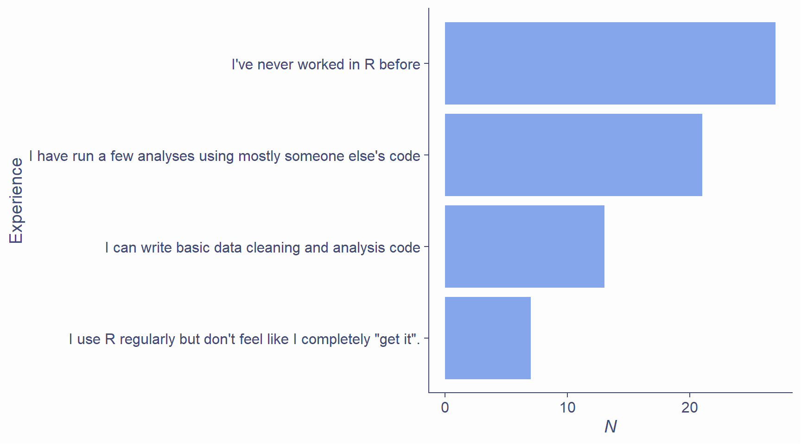
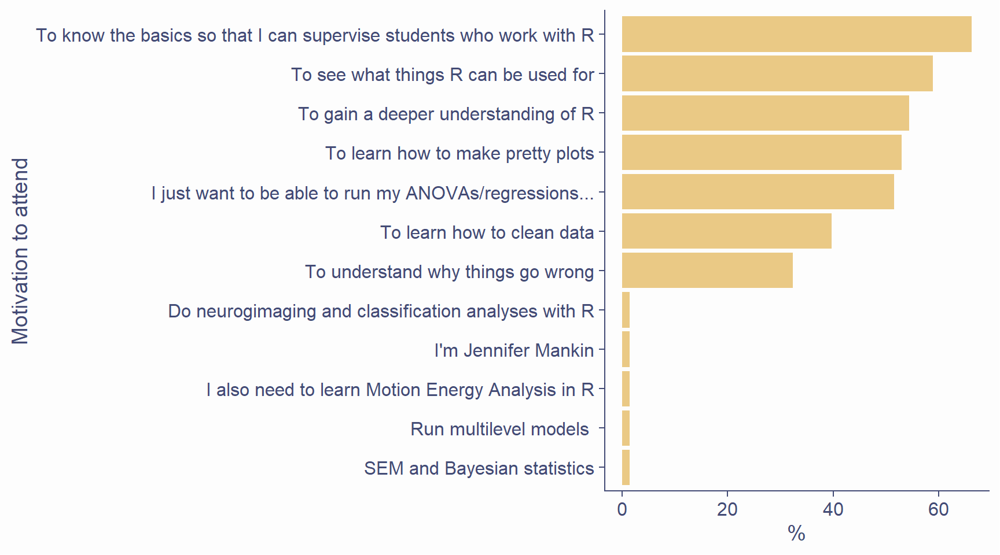
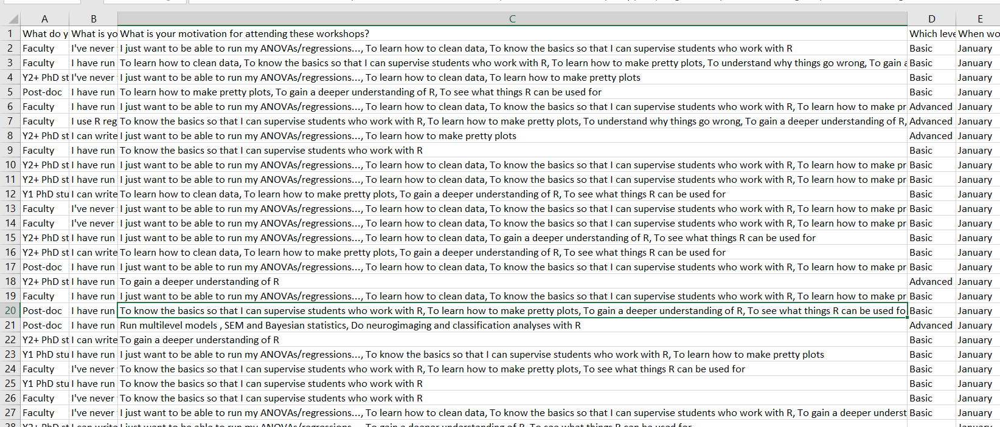
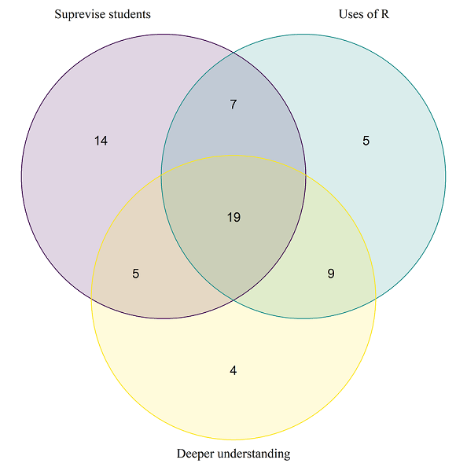
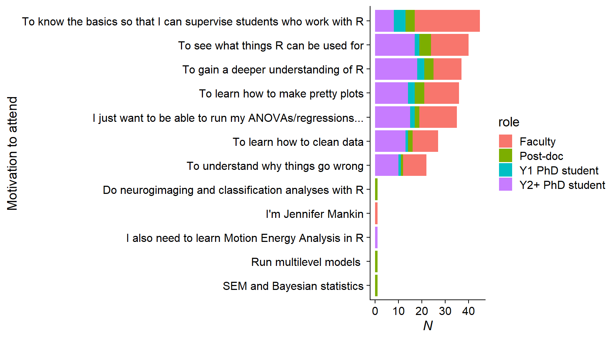
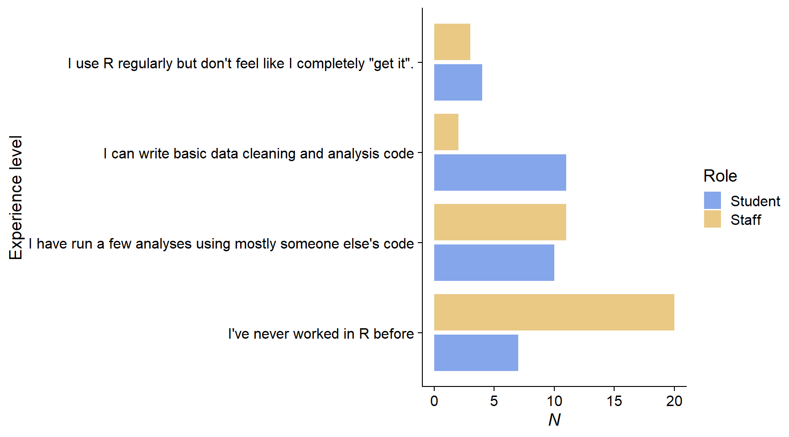

Purpose of the series
R and its best interface RstudioR

RR languageR but very useful!R MarkdownR projectsR?Data from survey look like this

df <- read_csv("poll.csv")
names(df) <- c("role", "r_exp", "reason", "level", "when", "own_laptop")
df$id <- sprintf("%02d", 1:nrow(df))
df_long <- df %>% mutate(reason = strsplit(reason, ", ")) %>% unnest
top3 <- df_long %>% group_by(reason) %>% tally %>% arrange(-n) %>% pull(reason) %>% .[1:3][1] "To know the basics so that I can supervise students who work with R"
[2] "To see what things R can be used for"
[3] "To gain a deeper understanding of R" 


m1 <- glm(role_bin ~ r_exp, df, family=binomial)
anova(m1, test = "LRT")
Analysis of Deviance Table
Model: binomial, link: logit
Response: role_bin
Terms added sequentially (first to last)
Df Deviance Resid. Df Resid. Dev Pr(>Chi)
NULL 67 94.033
r_exp 3 13.342 64 80.691 0.003953 **
---
Signif. codes: 0 '***' 0.001 '**' 0.01 '*' 0.05 '.' 0.1 ' ' 1
summary(m1)$coefficients
Estimate Std. Error z value Pr(>|z|)
(Intercept) -0.2118245 0.3120505 -0.6788147 0.49725529
r_exp.L -1.2997304 0.6231986 -2.0855798 0.03701671
r_exp.Q 1.1857890 0.6241010 1.8999953 0.05743374
r_exp.C 0.9084408 0.6250022 1.4535002 0.14608492